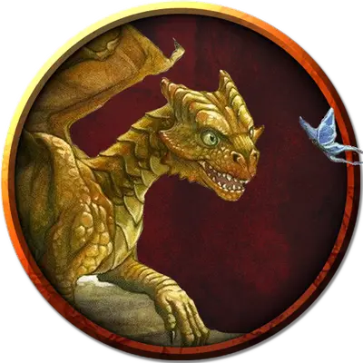

Молодой дракон времени
Young Time Dragon
Большой Дракон, нейтральный

Класс Доспеха 18 (природный доспех)
Хиты 210 (20к10 + 100)
Скорость 40 футов, летая 80 футов, лазая 40 футов
| мод | спас | ||
|---|---|---|---|
| СИЛ | 20 | +5 | +5 |
| ЛОВ | 12 | +1 | +5 |
| ТЕЛ | 20 | +5 | +9 |
| мод | спас | ||
|---|---|---|---|
| ИНТ | 20 | +5 | +5 |
| МДР | 15 | +2 | +6 |
| ХАР | 17 | +3 | +7 |
Навыки Восприятие +10, История +13, Магия +9, Скрытность +9
Чувства слепое зрение 30 футов, тёмное зрение 120 футов, пассивное Восприятие 20
Языки Все
Опасность 11 (7200 опыта)
Бонус мастерства +4
Действия
Мультиатака. Дракон совершает три атаки Раздиранием.
Раздирание. . Рукопашная атака оружием: +9 к попаданию, досягаемость 10 фт., одна цель. Попадание: 12 (2к6 + 5) рубящего урона плюс 7 (2к6) урона силовым полем.
Дыхание времени (перезарядка 5-6). Дракон выдыхает волну мерцающего света в виде 30-футового конуса. Немагические предметы и растительность в этой области, которые никто не несёт и не носит, обращаются в пыль. Каждое существо в этой области должно совершить спасбросок Телосложения Сл 17 . При провале существо получает 31(7к8) урона силовым полем и магически ослабляется, поскольку оно рассинхронизируется с текущим потоком времени. Пока существо находится в этом состоянии, броски атаки по нему совершаются с преимуществом, а другие существа получают сопротивление ко всему наносимому им урону. При успехе существо получает только половину этого урона. Ослабленное существо может повторять спасбросок в конце каждого своего хода, оканчивая на себе действие данного эффекта после того, как оно дважды преуспеет в данном спасброске.
Описание
“Не затевай драк с драконами; особенно с теми, которые помнят, как поедали тебя”.
—Морте
Эти грациозные драконы используют силу времени, чтобы манипулировать прошлым, настоящим и будущим. Драконы времени рождаются с блестящей чешуей и рогами, которые едва ли больше шишек. По мере того, как они осваивают течение времени, их рога покрываются ветвящимися радужными прожилками, наводящими на мысль о путях и возможностях времени.
Древние драконы времени могут создавать временные врата, связанные с определенными временами и местами в мультивселенной. Используя их, они и союзные существа могут перемещаться в любую точку времени, чтобы влиять на моменты, определяющие судьбу или устранять угрозы за пределами течения времени. В результате своей способности путешествовать между эпохами драконы времени часто кажутся оторванными от обычного течения времени и имеют гибкий взгляд на то, что есть, что было и что будет.
Драконы времени ценят исторические записи, предметы, представляющие исчезнувшие культуры, и сокровища давно ушедших создателей. Они очарованы магией манипулирования временем и забытыми знаниями. Те, кто наткнется на клад дракона времени, могут найти бесценную историческую информацию из прошлых эпох.